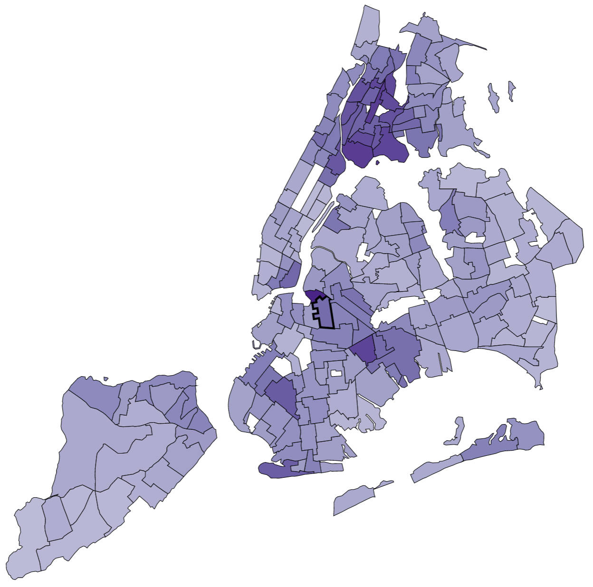

Data Explorer
Get data sets on important environment and health topics for NYC. View maps, charts, and more.
Select a topic to view data:
All topics
- Healthy eating
- Active design
- Air quality
- Alcohol access and use
- All data sets
- Asthma
- Asthma triggers at home
- Bed bugs
- Birth defects
- Birth outcomes
- Cancer
- Cancers in children
- Carbon monoxide
- Cigarette smoke
- Climate
- Cockroaches
- Drinking water quality
- Economic conditions
- Falls among older adults
- Health care
- Health impacts of air pollution
- Housing maintenance
- Housing safety
- Housing stability
- Lead poisoning
- Mice and rats
- Mortality
- Overweight
- Pesticides
- Physical activity
- Restaurant food safety
- Social conditions
- Transportation-related injuries
- Vector-borne disease
- Violence
- Walking, driving, and cycling
- Weather-related illness
- Worker health
Featured datasets:
What's inside:
Get trends...

...maps...

...and more!

Can't find what you're looking for? Browse an index of all our datasets.